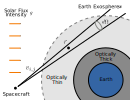

Carruthers Geocoronal Observatory
Carruthers Geocoronal Observatory (GCO) is a recently selected small satellite mission that will help physicists understand the uppermost parts of the Earth's atmosphere. It contains two UV imagers that will take pictures of the light from the Sun scattering off hydrogen in the Earth's exosphere.
Carruthers will orbit around L1, a point of gravitational equilibrium about 1.5 million km from the Earth where it will be able to observe the entirety of the exosphere continuously over several years.


Each pixel from vantage point measures the number of photons from a narrow slice of the atmosphere according to
If enough of these slices are collected, it is possible to reconstruct the full 3D density